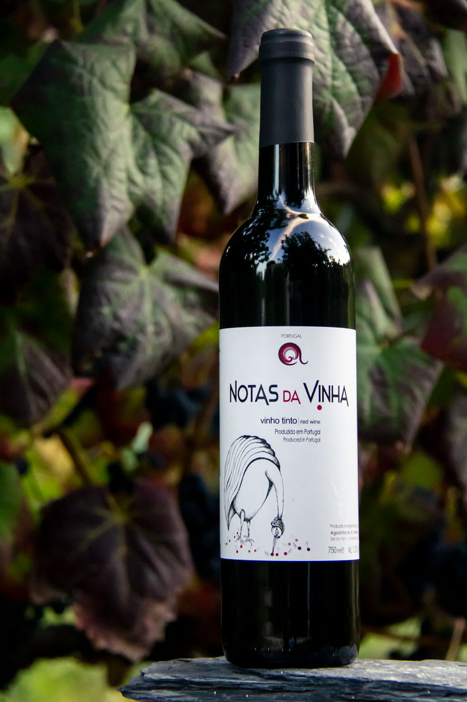

Situada na encosta do Rio Paiva em Bairros, Castelo de Paiva, em plena Região Demarcada dos
Vinhos Verdes, mais concretamente na Sub-região de Paiva, onde produzimos vinhos tinto e
branco, que refletem o nosso compromisso com a qualidade desde o cultivo das nossas vinhas
até o processo de vinificação. Combinando tradição e modernidade para produzir vinhos de
caráter e distinção, recorrendo às mais modernas técnicas de vinificação.
Valorizamos a sustentabilidade e a preservação do meio ambiente, utilizando práticas agrícolas
responsáveis que garantem a saúde do solo e das vinhas.
Os vinhos da Quinta da Lapa são comercializados com a marca “Notas da Vinha.
Os Nossos Vinhos
- Notas da Vinha -

Vinho Tinto
Vinho proveniente principalmente da casta Vinhão, com uma cor vermelha intensa, aroma a
frutos silvestres e vermelhos e taninos suaves. Fresco e intenso.
Com sua acidez equilibrada e notas frutadas, apresenta-se leve e elegante, com um
final persistente e delicado. O vinho branco Notas da Vinha é a escolha perfeita para
acompanhar momentos especiais.
Castas: Arinto, Avesso, Loureiro, Trajadura, Alvarinho e “Perola”
Contactos
- Notas da Vinha -
Entre em contacto conosco para se informar de preços e encomendas